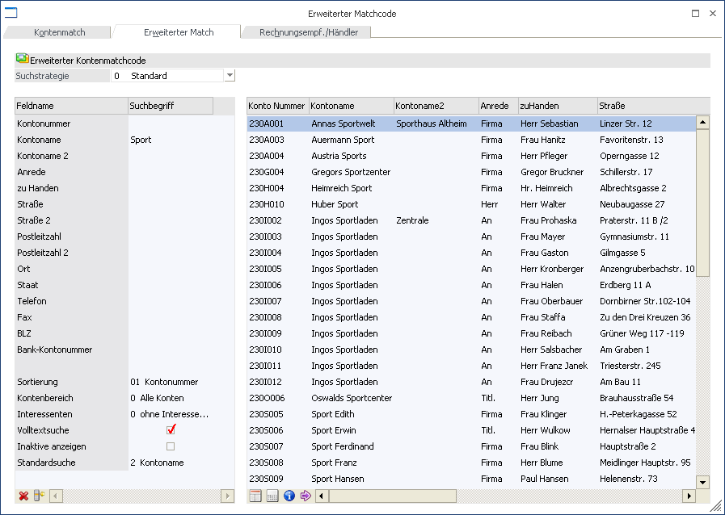
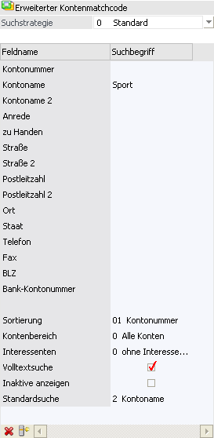
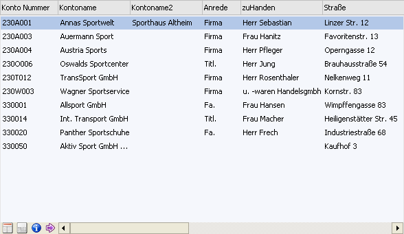
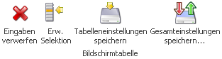
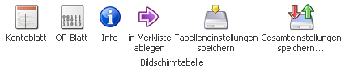

Wenn der Fokus in dem Feld "Kontonummer" oder "Interessentennummer" liegt und das Lupen-Symbol bzw. die Taste F9 gedrückt wird, dann öffnet sich das Programm "Konten - Matchcode". An dieser Stelle kann gezielt nach Personenkonten, Interessenten und Sachkonten gesucht werden.
Hinweis
Wenn in dem Feld "Kontonummer" bzw. "Interessentennummer" ein Teil der gesuchten Nummer oder Namen (Bezeichnung) eingetragen wurde und die Taste F9 gedrückt wird, dann wird diese Eingabe als Suchbegriff übernommen und die Suche direkt gestartet.
Grundsätzlich unterteilt sich der Matchcode in die folgenden Register, wobei immer der Matchcode in dem zuletzt verwendeten Register aufgerufen wird:
ü Konten - Match
In diesem Register kann durch Eingabe eines Suchbegriffs innerhalb der Nummer und dem Namen (der Bezeichnung) gesucht werden.
ü Erweiterter Match (aktuelles Register)
In diesem Register kann aufgrund einer zuvor angelegten Suchstrategie nach Personenkonten, Interessenten oder Sachkonten gesucht werden. Die Spalten in der Suchergebnistabelle werden dabei ebenfalls über die Suchstrategie definiert.
Hinweis
Die unterschiedlichen Suchstrategien werden in dem Programm "Vorlagen Anlage" (WinLine START - Vorlagen - Vorlagen Anlage - Stammdaten Personenkonten - Vorlage als "Suchstrategie") definiert.
ü Rechnungsempf./Händler
In diesem Register kann nach Konten, welche einen Rechnungsempfänger oder einen Händler hinterlegt haben, gesucht werden,
Register "Erweiterter Match"

In dem erweiterten Kontenmatchcode können neben Nummer und Name (Bezeichnung) nach weiteren Kriterien wie Straße, Postleitzahl, Ort, etc. gesucht werden. In welchen Feldern gesucht werden soll, kann über die Suchstrategie (Vorlagen) entschieden werden.
Hinweis
Wird der Matchcode in einem Sachkontenfenster aufgerufen, dann wird nur der "normale" Matchcode angezeigt.
Selektionsbereich

Ø Suchstrategie
An dieser Stelle kann eine Suchstrategie ausgewählt werden. Grundsätzlich steht die Strategie "0 - Standard" zur Verfügung, mit welcher in folgenden Feldern gesucht werden kann:
ü Kontonummer
ü Kontoname
ü Kontoname 2
ü Anrede
ü Zu Handen
ü Straße
ü Straße 2
ü Postleitzahl
ü Postleitzahl 2
ü Ort
ü Staat
ü Telefon
ü Fax
ü BLZ
ü Bank-Kontonummer
Hinweis
Eigene Suchstrategien können über das Programm "Vorlagen Anlage" (WinLine START - Vorlagen - Vorlagen Anlage - Stammdaten Personenkonten - Vorlage als "Suchstrategie") definiert werden. Dort kann dann eingestellt werden, nach welchen Feldern gesucht werden soll bzw. welche Felder in der Suchergebnistabelle angezeigt werden sollen.
Unabhängig von der gewählten Suchstrategie können immer folgende Einstellungen vorgenommen werden:
Ø Sortierung
Aus der Auswahlliste kann gewählt werden, nach welchem Kriterium die Sortierung in der Ergebnistabelle erfolgen soll. Dabei können alle Werte des Suchkriteriums verwendet werden, solange der Wert direkt aus dem Kontenstamm kommt.
Hinweis
Wenn eine Sortierung nach z.B. einer Eigenschaft gewünscht ist, dann muss dieses direkt über die Suchergebnistabelle (Klick auf die Spaltenüberschrift) erfolgen.
Ø Kontenbereich
An dieser Stelle kann der Kontenbereich selektiert werden, in welchem gesucht werden soll. Zur Auswahl stehen folgende Möglichkeiten:
ü 0 - Alle Konten
ü 1 - Debitoren
ü 2 - Kreditoren
Ø Interessenten
Hier kann gewählt werden, ob auch Interessenten in die Suche mit eingezogen werden sollen. Folgende Auswahlen sind dabei möglich:
ü 0 - ohne Interessenten
ü 1 - mit Interessenten
ü 2 - nur Interessenten
Ø Volltextsuche
Standardmäßig erfolgt die Suche linksbündig. Durch Aktivierung der Option "Volltextsuche" wird der Suchbegriff innerhalb des gesamten Wertes gesucht.
Beispiel
Es wird im Namen der Suchbegriff "sport" eingegeben. Erfolgt die Suche ohne Volltext, dann wird der Suchbegriff "sport%" übergeben. Wird die Suche hingegen mit Volltext durchgeführt, dann wird der Suchbegriff "%sport%" übergeben.
Ø Inaktive anzeigen
Durch Aktivierung dieser Option werden auch inaktive Konten bzw. Interessenten in der Ergebnistabelle angezeigt.
Ø Standardsuche
An dieser Stelle kann definiert werden, in welches Feld der Suchbegriff aus dem "Hauptfenster" (nach Drücken der Taste F9) in den erweiterten Kontenmatchcode übernommen werden soll. Hierfür stehen folgende Möglichkeiten zur Auswahl:
ü 1 - Kontonummer
ü 2 - Kontoname
Suchergebnistabelle

In der Suchergebnistabelle werden alle Informationen gemäß der verwendeten Suchstrategie angezeigt.
Hinweis
Der Start der Suche und somit das Füllen der Tabelle wird durch Anwahl des Buttons "Anzeigen" bzw. der Taste F5 ausgelöst.
Ø Optionale Spalte
Neben den Spalten, welche über die Suchstrategie definiert werden, kann über das Kontextmenü der rechten Maustaste (Funktion "Spalten anzeigen / verstecken") jederzeit folgende Spalte hinzugefügt bzw. entfernt werden
ü Zeilennr.
Es wird pro Datensatz eine aufsteigende Nummer angezeigt. Wenn der Fokus in der Spalte liegt kann anschließend durch Eingabe der Nummer direkt zum Datensatz gewechselt werden.
Buttons in dem Selektionsbereich

Ø Eingaben verwerfen
Wenn dieser Button angewählt wird, dann werden alle vorgenommenen Eingaben in den selbst definierten Eingabefeldern entfernt.
Ø Erw. Selektion
Wird dieser Button angeklickt, dann kann in den Feldern des Selektionsbereichs eine zusätzliche Selektion vorgenommen werden, die von der Funktionalität dem Filter ähnelt.
Hinweis
Die "Erweiterte Selektion" bleibt so lange erhalten, bis die Option wieder deaktiviert wird.
Ø Operator
Aus der Auswahllistbox kann zwischen folgenden Operatoren gewählt werden:
|
Operator |
Bezeichnung |
Bedeutung |
|
>< |
Von - Bis |
Der Bereich wird mit einer Unter- und Obergrenze eingeschränkt |
|
= |
Gleich |
Variablen, deren Wert mit der Bedingung genau übereinstimmt. |
|
<> |
Ungleich |
Variablen, deren Wert nicht dieser Bedingung unterliegt |
|
> |
Größer |
Variablen, deren Wert größer ist als jener in der Bedingung |
|
< |
Kleiner |
Variablen, deren Wert kleiner ist als jener in der Bedingung |
|
>= |
GrößerGleich |
Variablen, deren Wert größer ist als jener in der Bedingung oder mindestens gleich |
|
<= |
KleinerGleich |
Variablen, deren Wert kleiner ist als jener in der Bedingung oder höchstens gleich |
|
% |
Wie |
Nur wenn die Bedingung im Wert enthalten ist Beispiel Eingabe "Sport%" Es wird nach allen Werten gesucht, die mit dem Wort "Sport" beginnen.
Eingabe "%sport%" Es wird nach allen Werten gesucht, die das Wort "sport" enthalten. |
|
=0 |
IS NULL |
Variablen, deren Wert gleich Null ist (NULL bedeutet, dass das Feld in der Datenbank keinen Wert - auch nicht 0 - enthält). |
|
IN |
manuelle Auflistung |
Mit dieser Funktion kann eine Reihe von Werten abgefragt werden, die nicht unmittelbar hintereinander kommen (im Gegensatz zu "Von - Bis"). Damit können z.B. die Artikelgruppen 3, 7 und 12 oder die Kundengruppen 4, 10 und 47 abgefragt werden. Das Trennzeichen für die Werte ist das Semikolon ";". |
Hinweis
Bei der Eigenschaft "Mehrfachauswahl" gibt es folgende Besonderheiten bei den nachfolgenden Operatoren:
ü % - Wie
Es werden alle Konten angezeigt, bei denen einer der ausgewählten Werte zugeordnet wurde.
Beispiel
In der Mehrfachauswahl-Eigenschaft "Interesse an Produktgruppe" gibt es die definierten Werte "Fahrrad", "Fahrradzubehör", "Camping" und "Campingzubehör".
Bei einer Suche mit dem Operator "% - Wie" und der Auswahl "Fahrrad" und "Campingzubehör" würden alle Konten erscheinen, bei denen zumindest "Fahrrad" oder "Campingzubehör" zugeordnet ist.
ü IN - manuelle Auflistung
Es werden alle Artikel angezeigt, bei denen alle ausgewählten Werte zugeordnet wurden. Im Gegensatz zu dem Operator "= - Gleich" dürfen aber zusätzlich noch weitere Werte bei den Konten hinterlegt sein.
Beispiel
In der Mehrfachauswahl-Eigenschaft "Interesse an Produktgruppe" gibt es die definierten Werte "Fahrrad", "Fahrradzubehör", "Camping" und "Campingzubehör".
Bei einer Suche mit dem Operator "IN - Manuelle Auflistung" und der Auswahl "Fahrrad" und "Campingzubehör" würden alle Konten erscheinen, bei denen zumindest "Fahrrad" und "Campingzubehör" zugeordnet sind.
Ø Not
Ist diese Checkbox aktiv, dann wird die Bedingung verneint. Das bedeutet, es werden nur Datensätze ausgegeben, die außerhalb des selektierten Bereichs liegen.
Ø Suchbegriff / Suchbegriff 2
In diesen Feldern können die Suchbegriffe gemäß dem Operator eingetragen werden. Der Suchbegriff 2 steht nur beim Operator "Von - Bis" zur Verfügung.
Ø Tabelleneinstellungen speichern
Die Spalten einer Tabelle können grundsätzlich an beliebige Positionen verschoben, bzw. in der Breite entsprechend angepasst werden. Durch Anwahl des Buttons "Tabelleneinstellungen speichern" werden die Einstellungen benutzerspezifisch gespeichert und bei dem nächsten Aufruf des Programmpunktes wieder vorgeschlagen.
Ø Gesamteinstellungen speichern
Im Gegensatz zu "Tabelleneinstellungen speichern" können mit "Gesamteinstellungen speichern" mehrere Tabellenaufbauten gespeichert und nach Wunsch geladen werden. Zusätzlich werden Sonderfunktionen der Tabelle (z.B. "Spalte gruppieren") ebenfalls bei der Speicherung bedacht.
Buttons in der Suchergebnistabelle

Ø Kontoblatt
Bei Anwahl des Buttons "Kontoblatt" wird automatisch in die WinLine FIBU gewechselt und das Kontoblatt des markierten Kontos am Bildschirm ausgegeben.
Ø OP-Blatt
Bei Anwahl des Buttons "OP-Blatt" wird automatisch in die WinLine FIBU gewechselt und die Auswertung "Offene Posten" am Bildschirm ausgegeben.
Ø Info
Durch Anklicken des Buttons "Info" wird die "Konteninfo" geöffnet, in welcher die Daten des markierten Kontos angezeigt werden.
Ø in Merkliste ablegen
Durch Anklicken des Buttons "in Merkliste ablegen" werden die zuvor selektiert Einträge in eine Merkliste / Kampagne übergeben.
Ø Tabelleneinstellungen speichern
Die Spalten einer Tabelle können grundsätzlich an beliebige Positionen verschoben, bzw. in der Breite entsprechend angepasst werden. Durch Anwahl des Buttons "Tabelleneinstellungen speichern" werden die Einstellungen benutzerspezifisch gespeichert und bei dem nächsten Aufruf des Programmpunktes wieder vorgeschlagen.
Ø Gesamteinstellungen speichern
Im Gegensatz zu "Tabelleneinstellungen speichern" können mit "Gesamteinstellungen speichern" mehrere Tabellenaufbauten gespeichert und nach Wunsch geladen werden. Zusätzlich werden Sonderfunktionen der Tabelle (z.B. "Spalte gruppieren") ebenfalls bei der Speicherung bedacht.
Buttons

Ø Anzeigen
Durch Anklicken des Buttons "Anzeigen" bzw. durch Drücken der F5-Taste wird die Suche ausgelöst.
Ø Ende
Durch Anwahl des Buttons "Ende" bzw. der Taste ESC wird der Programmbereich geschlossen.
Ø Neuanlage
Durch Anwahl des Buttons "Neuanlage" kann direkt ein neues Konto anlegen werden, wobei es vom ausgewählten Kontenbereich abhängig ist, ob das Fenster für Sachkonten oder für Personenkonten geöffnet wird.
Ø Editieren
Durch Anklicken des "Editieren"-Buttons kann das Konto, welches in der Suchergebnistabelle markiert wurde, direkt editiert werden.
Ø Konteninfo
Wird dieser Button gedrückt, so werden alle Konten, die sich aktuell in der Ergebnistabelle befinden, in einer Konteninfo am Bildschirm dargestellt.
In dieser Konteninfo stehen alle Variablen der View 50 zur Anzeige zur Verfügung, d.h. es erfolgt keine Anzeige für die Kontenbereiche "Sachkonten", "Zahlungsmittelkonten" oder "Anlagenkonten".
Hinweis 1
Die Liste dient nicht nur als Auswertung, sondern auch als erweiterte Matchcodeauswahl. D.h. wenn ein Konto aus der Liste angewählt wird, dann wird dieses Konto in das entsprechende Kontofeld eingetragen und der Matchcode geschlossen.
Hinweis 2
Die Einstellung, ob die Info ausgegeben werden soll, wird benutzerspezifisch gespeichert.
Ø Filter bearbeiten
Durch Anwahl des Buttons "Filter bearbeiten" kann die Kontensuche nach frei definierbaren Kriterien eingeschränkt werden.